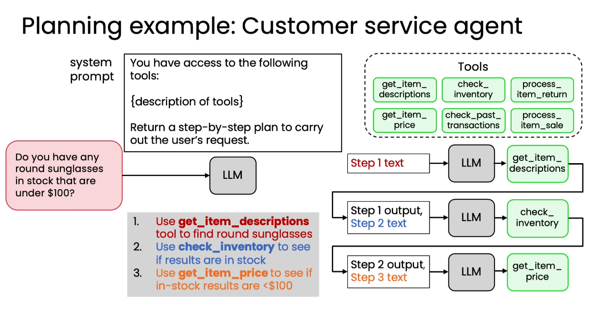
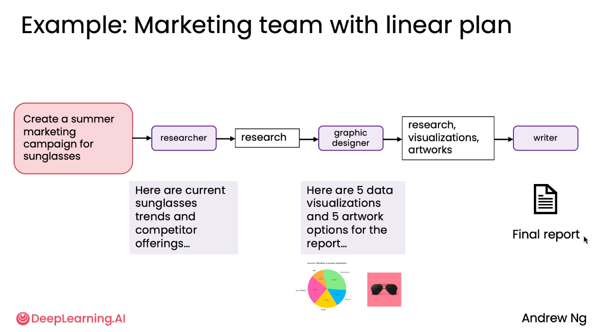

Planning moves the action sequence into the model
In a fixed workflow, developers decide the tool order ahead of time. In a planning workflow, the model receives a goal and an available tool set, then proposes the sequence needed for that specific request.

{kind=link}
Capability
One tool set, more requests
The model can compose different actions without a developer predefining every route.
Control cost
The route is less predictable
The generated plan may be unstable, incorrect, or attempt an action the workflow should not permit.
Structured output turns a proposal into an interface
A natural-language plan can be difficult for downstream code to parse consistently. The lesson asks the model for a JSON or XML plan whose steps use known fields, so the application can validate and execute them in order.
The application parses the model’s list, extracts the named tool and arguments, executes the function, and makes its output available to later steps.
Code can be both the plan and the action
For operations such as filtering, sorting, deduplicating, and counting, a long series of narrow tool calls can become awkward. The code-as-action lesson lets the model express the full sequence as Python, using familiar library operations and intermediate variables.
- PromptDescribe the data and task. Supply the available tables, fields, and execution constraints.
- WriteReturn a code plan. Comments can document the intended steps while executable statements perform them.
- RunExtract and execute the marked block. The result becomes the answer or evidence for another pass.
- ContainUse a sandbox. The lesson explicitly warns that generated code must not run with unrestricted access.
The customer-service lab makes state changes observable
The first Module 5 lab models a sunglasses store with TinyDB inventory and transaction tables. The workflow builds a live schema description, asks the model for Python inside execution tags, and runs that plan in a controlled namespace.
Customer-service interfaces
generate_llm_code(question, inventory, transactions) -> plan_with_codeexecute_generated_code(plan_with_code, approved_state, user_request) -> {answer, status, stdout, error, inventory_after, transactions_after}customer_service_agent(question, reseed=False) -> {plan, execution_artifacts}reseed=Trueis only the lab’s reproducibility control; normal calls keep the current state.
Read-only query
Find round frames in stock and filter them by a price under $100.
Return
Increase inventory, append a transaction, and update the recorded balance consistently.
Purchase
Handle one or several products through the same code-planning pattern.
Visible effects
Capture logs, errors, answer fields, and before-and-after table snapshots.
| Decision | Required behavior |
|---|---|
| Constraints | Derive every filter, price range, quantity, and action from the request. |
| Ambiguous intent | Stay read-only and report the operation as a dry run. |
| Validation | Validate every requested item before any mutation; insufficient stock means no mutation. |
| Multiple items | Create a separate transaction row per item and update the running balance sequentially. |
| Human result | Always return a short answer_text plus success, no_match, insufficient_stock, invalid_request, or unsupported_intent. |
The lab’s executor restricts the available namespace to the demonstration tables and approved helpers. This keeps the generated plan inspectable and shows exactly which records changed.
Multi-agent workflows assign focused responsibilities
The course treats multiple agents as a decomposition technique: even when they use the same underlying model, separate prompts, tools, and roles can make each component’s job smaller and easier to develop.

{kind=link}
Agent handoff interfaces
market_research_agent() -> trend_summarygraphic_designer_agent(trend_summary) -> {image_path, prompt, caption}copywriter_agent(image_path, trend_summary) -> {quote, justification}packaging_agent(trend_summary, image_path, quote, justification) -> report_pathrun_sunglasses_campaign_pipeline() -> {trend_summary, visual, quote, markdown_path}
In the market-research lab, specialized agents scan fashion sources, match trends to the product catalog, create a visual concept, write campaign copy, and package the outputs into an executive-ready report.
Decomposition
Roles turn one complicated prompt and tool set into a sequence of smaller tasks.
Focus
Each agent receives instructions and tools tailored to one responsibility.
Modularity
A role such as graphic designer can be improved or reused independently.
Traceability
Intermediate briefs, prompts, images, copy, and reports remain visible between handoffs.
The communication pattern shapes coordination
Multi-agent design is not only about roles. The course compares four ways to route work and feedback among them.
Fixed pipeline
Python owns the order
The lab calls research, design, copywriting, and packaging in a known linear sequence. Intermediate artifacts remain visible at every handoff.
Planner-managed
The model owns the sequence
The lesson gives agent descriptions to a marketing-manager model, which chooses a request-specific order and passes results between roles.
Moving control from Python into the planner increases autonomy because the sequence is decided at runtime rather than fixed in application code.
Linear
Work moves in one direction. The structure is simple but offers little room for feedback.
Hierarchical
A manager assigns tasks and combines results. Control is clear, but the manager can become a bottleneck.
Deep hierarchy
Sub-agents manage their own teams. The structure scales, while communication and debugging become harder.
All-to-all
Every agent may communicate with every other. It is flexible and creative, but completion is less predictable.
The right pattern depends on how much structure the task needs and how much uncertainty the application can tolerate.
Higher autonomy builds on the earlier modules
The conclusion ties the course together: agentic workflows combine reflection, tool use, evaluation, planning, and multi-agent coordination to handle tasks that are difficult to solve in one model call.
Self-check
How does planning differ from a hard-coded workflow?
The model chooses the steps and their order for the current request instead of following one sequence fixed by the developer.
Why request a structured plan?
Known fields such as description, tool, and arguments let downstream code parse and execute each step reliably.
What changes when one agent becomes a multi-agent system?
The task is divided into focused roles, and the developer must also choose a communication pattern for their outputs and feedback.
How does a fixed pipeline differ from planner-managed coordination?
A fixed pipeline follows an order encoded by the developer; planner-managed coordination asks a model to choose the request-specific sequence and route results between roles.
Course evidence + image attribution
Original English summary based on lessons 5.1–5.7, the two ungraded labs, and the course conclusion in the Datawhale China Module 5 reference. Contributor commentary and external framework recommendations were excluded. The two selected lesson images are reproduced from pinned commit a93ab1d with source links in their captions. The repository contains an Apache-2.0 LICENSE while its README names CC BY-NC-SA 4.0; attribution is preserved and this site does not claim image ownership.